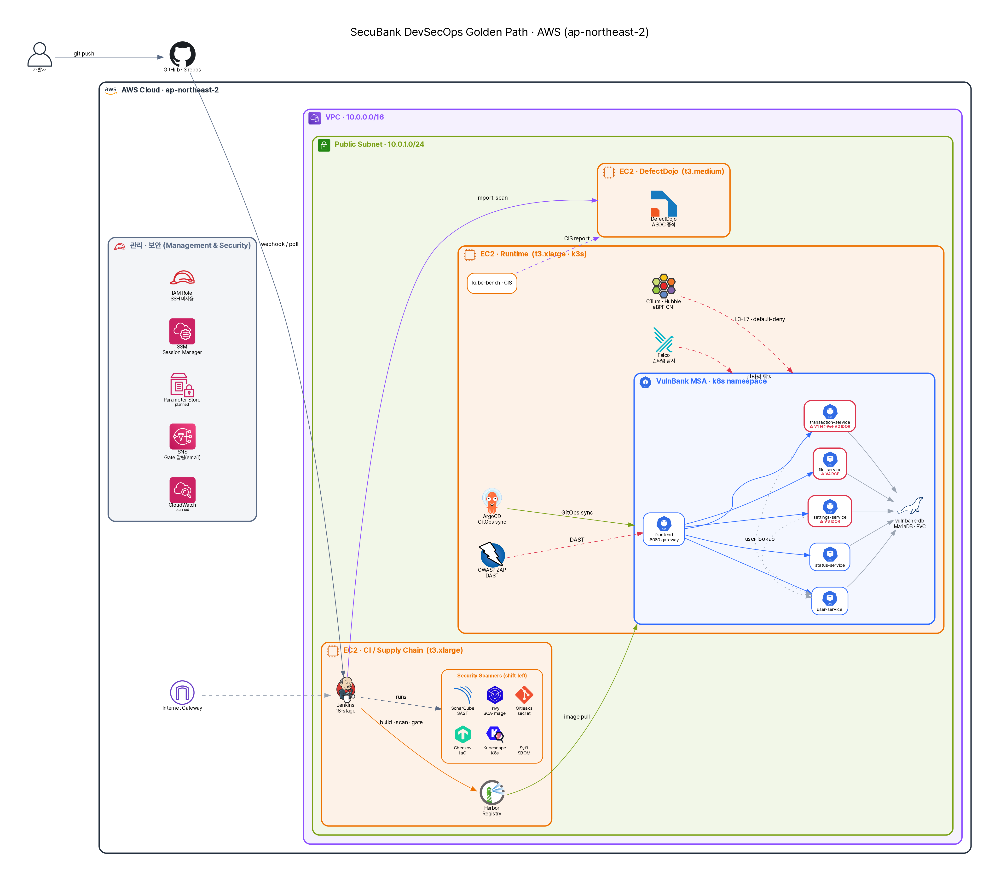

보안담당자 실무를 재현한 DevSecOps Golden Path¶
들어가며¶
"보안 도구를 더 붙이면, 정말 안전해질까요?"
요즘 파이프라인에는 스캐너가 빼곡합니다. 정적분석, 의존성 점검, 시크릿 탐지, 이미지 스캔까지 도구는 넘치는데, 정작 배포 버튼 앞에서 보안담당자가 받는 질문은 늘 똑같습니다. "이거, 지금 내보내도 됩니까?" 누군가는 대시보드의 빨간 숫자를 세고, 누군가는 "원래 그랬어요"라고 답하고, 또 누군가는 그냥 통과시킵니다. 막거나 허용한 근거는 그 사람의 머릿속과 흩어진 리포트에만 남고, 담당자가 바뀌면 그 맥락도 함께 사라집니다.
그래서 보안 리더의 진짜 고민은 '도구를 몇 개 붙였느냐'가 아닙니다. "매 배포마다 무엇을 근거로 막고 허용하는가, 그리고 그 판단이 특정 개인이 아니라 조직의 반복 가능한 구조로 남는가"입니다.
이 프로젝트는 그 질문에 답해보려고, 일부러 취약하게 만든 뱅킹 애플리케이션(VulnBank MSA, 6개 마이크로서비스)을 실제 파이프라인에 통과시켜 봤습니다. AWS 위에 terraform으로 서버 3대를 세우고, Jenkins 18단계 파이프라인이 소스부터 이미지까지 검사한 뒤, ArgoCD가 k3s에 배포하고, Cilium과 Falco가 실행 중인 컨테이너를 지켜봅니다. 음수 송금, 권한 우회(IDOR) 두 가지, 파일 업로드를 통한 원격 코드 실행 — 의도한 네 개의 취약점을 일부러 살려두고, 각 통제가 그중 무엇을 잡고 무엇을 놓치는지를 숫자로 기록했습니다. 정적분석은 네 개 중 하나도 잡지 못했고, 동적분석은 셋을 잡았습니다.
이 글에서는 그 기록을 공유합니다. 각 보안 도구가 어떤 위협을 맡고 왜 필요한지, 단일 도구로는 왜 부족한지를 실제 측정값으로 보여드리고, 최근 이어진 공급망 공격(axios·TanStack·Shai-Hulud)을 이 파이프라인이 어디서 막고 어디서 못 막는지를 정직하게 따져봅니다. 그리고 그 결과를 ISMS-P 같은 규제 이행의 증거로 어떻게 번역하는지, 이 구조를 AWS가 아닌 온프레미스나 하이브리드 환경에 어떻게 정착시키는지까지 다룹니다. 도구를 나열하는 글이 아니라, 판단하고 막고 추적하고 다시 평가하고 증적을 남기는 보안담당자의 하루가 어떻게 반복 가능한 구조가 되는지에 대한 이야기입니다.
해결하려는 문제¶
이 고민을 세 개의 질문으로 좁혀 봤습니다.
이 PoC가 답하려는 질문
- 도구를 많이 붙이면 안전한가요? 단일 도구에는 사각이 있습니다. 정적분석은 약한 암호나 TLS 검증 누락 같은 코드 패턴은 잘 잡지만, 비즈니스 로직과 인가(IDOR) 결함은 보지 못합니다.
- 배포 시점 한 번의 검사로 충분한가요? 오늘 통과한 빌드가 내일 공개된 CVE로 위험해질 수 있습니다. 재평가 체계가 없으면 이미 배포된 이미지는 그대로 방치됩니다.
- 판단과 차단, 증적이 흩어져 있지는 않나요? 무엇을 왜 막고 허용했는지가 사람의 기억과 산발적인 리포트에만 남으면, 나중에 감사도 추적도 할 수 없습니다.
전체 아키텍처¶

위 다이어그램은 diagram-as-code로 생성한 버전이며, AWS 공식 아이콘 스타일 버전을 별도 정리 중이다.
골든패스 흐름: 개발자가 GitHub에 push → Jenkins CI가 다중 repo를 checkout하고 18단계 보안 검사 수행 → 통과 이미지를 Harbor에 push → GitOps repo 갱신 → ArgoCD가 runtime k3s에 배포 → Cilium/Falco가 런타임 행위를 관측·차단 → 모든 스캔 결과는 DefectDojo로 모여 triage된다. (3-VM: CI / runtime k3s / DefectDojo)
핵심 기능 및 기술 구현¶
1. Shift-left CI 파이프라인 (18-stage)¶
무엇 — Jenkins 선언형 파이프라인(Jenkinsfile.aws-ci)이 18개 stage로 구성된다.
왜 — 비싼 빌드 전에 싸고 빠른 소스 검사를 먼저 돌려 일찍 차단(shift-left)하기 위해.
어떻게 — 빌드 전: Gitleaks(시크릿) → SonarQube(SAST) → Checkov(IaC) → Kubescape(K8s). 빌드 후: Syft(SBOM) → Trivy(이미지 CVE) → Security Gate → Harbor push.
효과 — 6개 서비스 빌드+스캔+push가 한 흐름에서 동작(Build #3 SUCCESS), 모든 결과를 증적으로 아카이브.
2. 계층방어 — OWASP Top 10을 레이어별로 분담¶
무엇 — 도구를 OWASP Top 10 카테고리에 매핑해 사각을 메운다.
| OWASP 2021 | 담당 도구 | 실제 탐지 (Build #3) |
|---|---|---|
| A02 Cryptographic Failures | SonarQube(SAST) | TLS 인증서/호스트명 검증 비활성 (CWE-295/297) |
| A06 Vulnerable Components | Trivy(SCA) | base image 29 CRITICAL / 1319 HIGH (CVE-2023-38545 등) |
| A07 Auth/Secrets | Gitleaks | 하드코딩 시크릿 (CWE-798) |
| A05 Security Misconfig | Checkov / Kubescape | 컨테이너 root 실행, NSA 14/20·CIS 26/33 |
| A01 Broken Access Control | DAST | IDOR (CWE-639) |
| A04 Insecure Design | DAST | 음수 송금·파일업로드 RCE (CWE-840/434) |
왜 / 효과 — SAST의 의도 취약점 recall은 0/4였다. 음수 송금·IDOR·RCE 같은 로직/인가 결함은 정적분석의 사각이기 때문이다. 이 0/4를 DAST가 메우는 것이 계층방어의 정량적 근거다. 단일 도구로는 A01~A08을 덮을 수 없다.
3. Security Gate — "판단"을 코드화¶
무엇 — 모든 스캔 결과를 집계해 차단 여부를 판정(GATE_MAX_CRITICAL=0, MAX_HIGH=3).
핵심 인사이트 — VulnBank의 전체 보안등급은 D였지만 SonarQube Quality Gate는 PASS였다. 게이트가 new_security_rating(신규 코드)만 평가했기 때문이다. → "정탐/오탐 못지않게 게이트 정책 설계가 중요하다"는 실무 교훈.
어떻게 — ENFORCE_GATE 플래그로 차단(enforce) vs 증적만 남기고 진행(report-only)을 환경·업무영향에 따라 선택. 보안은 무조건 막는 게 아니라 판단의 문제다.
4. GitOps 자동 배포¶
무엇/어떻게 — Jenkins는 Git에 쓰기만 하고, ArgoCD의 syncPolicy.automated가 gitops repo를 감시해 k3s에 자동 동기화한다. Git이 single source of truth.
효과 — 배포가 선언적·추적 가능해지고, 드리프트는 selfHeal로 교정된다.
5. 런타임 제로트러스트¶
무엇 — eBPF 기반 Cilium/Hubble(L3-L7 정책·flow 가시성), Falco(런타임 위협 탐지), kube-bench(CIS 벤치마크).
왜 — 빌드 시점 검사를 통과해도 런타임에서 RCE·측면이동이 일어날 수 있다. default-deny CiliumNetworkPolicy로 허용하지 않은 트래픽을 전면 차단(제로트러스트).
효과 — SAST가 놓친 RCE도 런타임에서 Falco가 이상 프로세스를 탐지하고 Cilium이 egress를 차단 → Hubble에 증적. (MITRE ATT&CK 매핑)
6. 증적과 Triage¶
무엇 — 도구 결과(Trivy/Gitleaks/Checkov/SBOM)를 DefectDojo로 import-scan해 통합.
왜/효과 — finding을 Active / Verified / False Positive / Risk Accepted로 상태 전환하며 dedup·SLA 관리. 오탐 처리가 "무시"가 아니라 근거 있는 상태 전환이 된다(VEX 포함).
7. SBOM 기반 지속 재평가¶
무엇/어떻게 — Syft가 빌드된 이미지의 SBOM(SPDX + CycloneDX)을 생성·저장한다. 왜 — 신규 CVE(xz-utils류)가 공개되면, 저장된 SBOM을 재스캔해 "우리 배포 이미지가 영향받는가"를 즉시 판단할 수 있다. 보안은 배포 시점 검사가 아니라 지속 재평가.
효과 (정량 결과 — Build #3)¶
| 항목 | 값 |
|---|---|
| 파이프라인 | SUCCESS, 6개 서비스 build·scan·push |
| SAST | Vulnerability 2(TLS), Security Hotspot 45, 보안등급 D, 의도취약점 recall 0/4 |
| SCA(Trivy) | user-service 기준 CRITICAL 29 / HIGH 1319 → Security Gate BLOCK |
| Secrets | 하드코딩 2건 |
| IaC/K8s | Checkov 30 findings, Kubescape NSA 14/20·MITRE 16/17·CIS 26/33 |
| SBOM | 6개 서비스 SPDX+CycloneDX |
한계 및 향후¶
이 PoC는 보안 통제(탐지·차단·증적) 축에 집중했고, 다음은 의도적으로 범위 밖이다 — 다만 갭을 인지한다.
- 운영/장애대응: Prometheus/Grafana 관측, SNS 알림, 백업·DR, runbook 미구축
- 기술 HA: 단일 노드 k3s·단일 AZ (프로덕션은 멀티AZ·HA 필요)
- 보안 보강: 시크릿을 AWS SSM Parameter Store로, 이미지 Cosign 서명 + Kyverno 검증, 서비스 간 Istio mTLS
- 규제/거버넌스: 금융 규제(전자금융감독규정·ISMS-P) 매핑, 변경관리·직무분리, 증적 보존정책
- 재평가 엔진: Dependency-Track 도입으로 SBOM 지속 재매칭
마치며¶
이 프로젝트의 가치는 도구를 몇 개 붙였는지가 아니라, 각 도구가 어떤 위협을 맡고 실제로 무엇을 잡고 무엇을 놓쳤는지를 데이터로 남겼다는 데 있습니다. 정적분석이 놓친 취약점을 동적분석이 메우고, 게이트가 판단하고, 런타임이 차단하고, 그 모든 근거가 한곳에 모여 추적됩니다. 누가 그 자리에 있든 같은 근거로 같은 판단을 반복할 수 있다면, 보안은 그제야 한 사람의 역량이 아니라 팀의 구조가 됩니다.